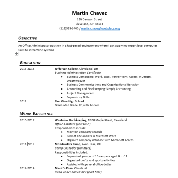
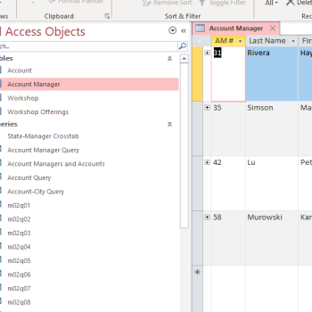

This page contains examples of work in Microsoft Office apps. Click on a thumbnail to download the project file.
Word

A resume made from a blank Microsoft Word document. No templates or wizards were used.
A multi-page conference proposal made in Microsoft Word.
A multi-page trifold brochure.
Powerpoint
A basic powerpoint presentation.
Excel

A loan amortization schedule.
A best case/worst case profit forcaster.
Access

An Access database with multiple tables and queries.